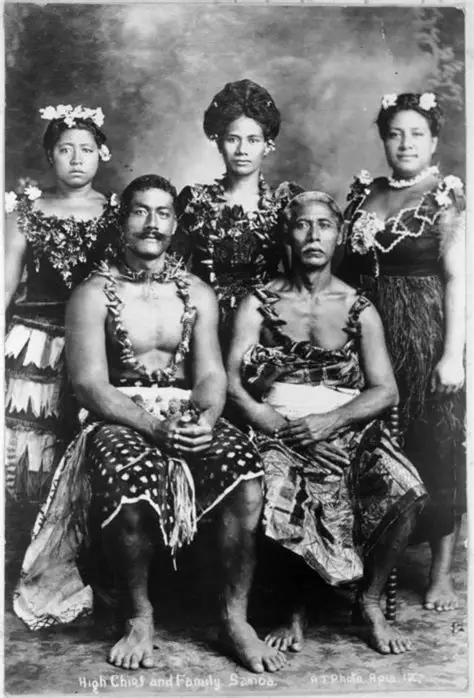

Family
Family is an important part of Samoan life. Extended family members often support one another and work together in their communities.
Learn about some of the values and traditions that shape everyday life in Samoa.

Family is an important part of Samoan life. Extended family members often support one another and work together in their communities.

Food plays an important role in Samoan gatherings. Traditional foods and meals are often shared during family events, celebrations, and community activities.

Community life encourages people to work together, help one another, and show respect for elders and other members of the village.
Samoan is an important part of the country's identity. Language helps connect generations and preserve cultural knowledge and traditions.